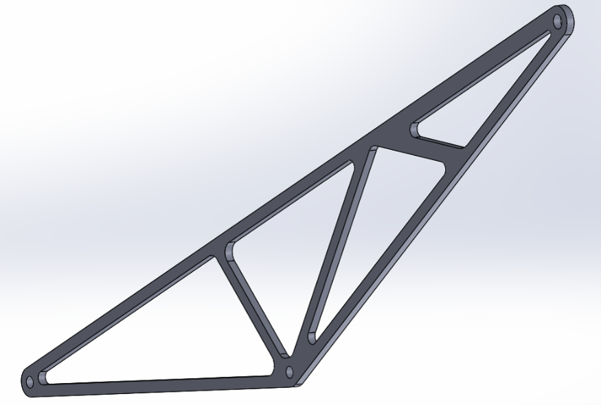
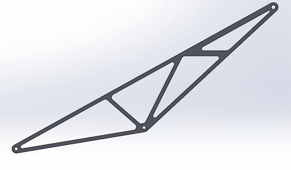

Falcon E Racing - Formula Student
Ongoing Formula Student aerodynamics work spanning carbon-fibre aero components, compliant mounting design, and an individual semi-monocoque sailplane wing study.
Project Overview
As a selected member of the Falcon E Racing aerodynamics subsystem, I contribute to aerodynamic component design, composite manufacturing, and development work for Formula Student Spain 2026. My team responsibilities include designing a rear-wing mounting bracket to meet the 2026 FS Rulebook, manufacturing aerodynamic components in carbon fibre, and supporting the next-generation aerodynamic package.
Alongside the team programme, I am developing an individual semi-monocoque sailplane wing design. This study connects aerodynamic performance with structural sizing, material selection, buckling checks, and manufacturable wing-box design.
Team Contribution
- Designed the rear-wing mounting bracket with Formula Student rule compliance in mind.
- Manufactured front-wing, rear-wing, diffuser, and body-panel components using carbon-fibre wet layup and vacuum bagging.
- Contributed to the next-generation aerodynamic package and current E3 rear-wing development.
- Applied SolidWorks for component design and supported practical composite manufacturing decisions.
Individual Wing Design Brief
The individual project is a sailplane design with a semi-monocoque wing. The objective is to maximise aircraft range while satisfying aerodynamic, structural, mass, and manufacturability constraints.
- Target wingspan range: 12-18 m; selected preliminary span: 15 m.
- Aspect ratio: 24; taper ratio: 0.8.
- Root chord: 0.694 m; tip chord: 0.556 m.
- Aircraft mass target: 250-300 kg; selected design mass: 275 kg.
- Maximum allowable wing mass: 110 kg.
- Fuselage length constrained to 45-55% of wingspan.
Phase 1 - Aerodynamic Design
Status: Completed
Phase 1 established the aerodynamic baseline for the sailplane. Candidate airfoils including FX67K170, FX73K170, FX60126, FX61184, and GOE533 were evaluated using a weighted decision matrix.
- Lift-to-drag ratio weighted at 50%.
- Manufacturability weighted at 30%.
- Lift coefficient weighted at 20%.
- FX73K170 selected with a weighted score of 4.4.
- Reported matched condition: α = 3.5°, CL = 0.975, CD = 0.00768, CL/CD = 126.95.
- Reported operating result: α = 2.5°, CL = 0.8710, CD = 0.00731, CL/CD = 119.15.
- Generated lift reported as 2701.27 N.
Phase 1 also established the wing geometry and aerodynamic design basis for the structural phase.
Phase 2 - Structural Design and Material Selection
Status: In progress
Phase 2 develops a two-spar semi-monocoque wing box compatible with the Phase 1 aerodynamic geometry. The current work establishes the structural idealisation, loading assumptions, sizing methods, mass targets, and candidate aluminium materials.
- Two-spar semi-monocoque wing box with skins, webs, ribs, stringers, and spar caps.
- Vertical loading carried primarily through spar caps and booms; shear carried through skins and spar webs.
- Euler-Bernoulli beam theory used for spar bending.
- Thin-walled theory used for skin and web shear sizing.
- Flat-plate buckling used for skin panels; Euler column buckling used for stringers.
- Local flange buckling and crippling checks included for Z-section stringers.
- Maximum wing-tip deflection limited to 5% of span = 750 mm.
- Front spar search range: 10-30% chord; second spar placement range: 40-80% chord.
- Minimum wing-box separation: 20% chord; target cross-product inertia Ixy = 0.
Materials and Current Progress
- 7075-T6 aluminium: selected for spar caps, stringers, and ribs; density 2810 kg/m³ and tensile yield strength 635 MPa.
- 6061-T6 aluminium: selected for wing skins and shear webs; density 2700 kg/m³ and tensile yield strength 276 MPa.
- Upper spar caps are treated primarily in compression and lower spar caps in tension.
- Structural load distributions, preliminary spar/boom sizing criteria, buckling methods, mass targets, and material selection are documented.
- Final structural sizing, refinement, trade-off comparison, and validation remain ongoing.
Tools Used
Aerodynamics Gallery
2 images